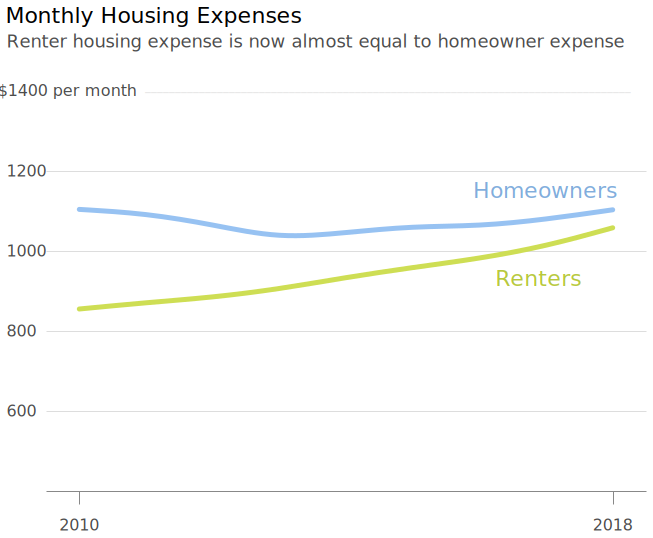
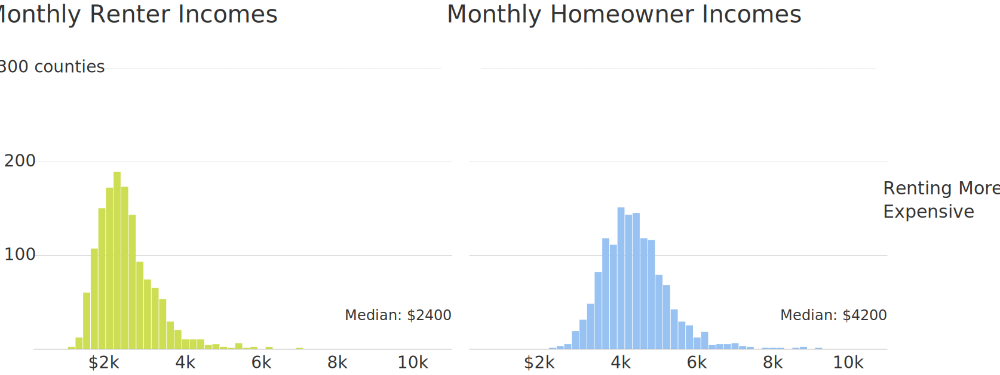
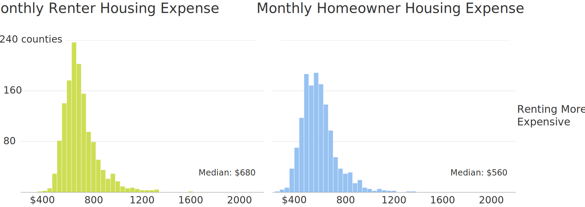
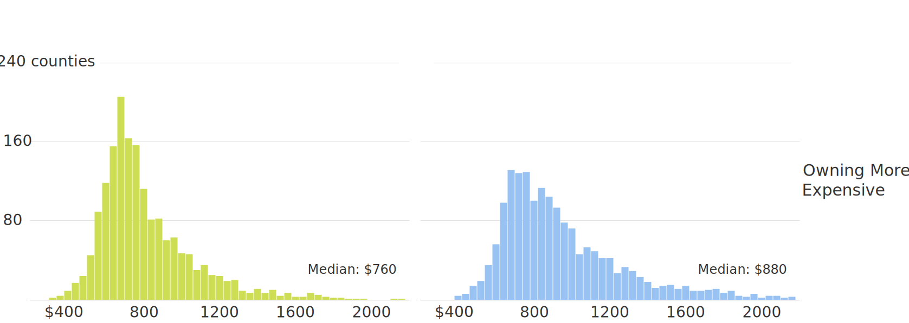
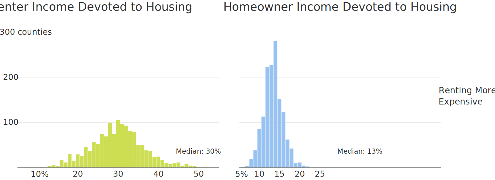
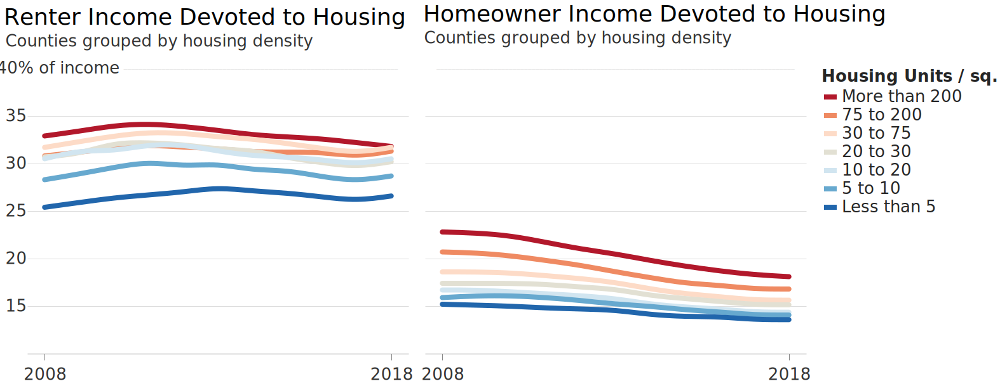

Analyzing the 30% Housing Affordability Rule
This is the first in a series of articles examining issues related to housing affordability.

Feb 2020
In this first article I present a comparative analysis of how renters and homeowners fare with regard to the popular 30% housing affordability rule. The findings below were extracted from income and housing data retrieved primarily from the US Census Bureau and Zillow. More details can be found in this project’s GitHub repository.
The 30% rule is a housing affordability standard which states that housing expense should not exceed 30% of household income. This standard was originally outlined in the National Housing Act of 1937 to establish reasonable rent for low-income households (initially 20% of income) and has since become widely accepted as a reliable affordability standard for all housing. While it wasn’t created to serve as a universal measure of affordability, it does provide a useful general guideline for individuals and institutions to lean on. In my analysis below, I dissect this rule and provide some insight into its impact on housing today, specifically highlighting the differences between renters and homeowners.
Debt-to-Income Ratio
One manifestation of the 30% rule is the debt-to-income ratio (DTI), which mortgage lenders use to approve loans. They typically require that gross household income not exceed 28% of total housing expense, including the loan principal, interest, taxes, and insurance (PITI). This upper limit on housing expense ensures responsible lending and is specifically referred to as the front-end DTI. Although lenders also factor in additional debts when approving loans (e.g. credit card bills, car payments, etc.) I will focus specifically on front-end DTI in my analysis since non-housing related debts vary widely across different household types.
Do Renters Differ From Homeowners?
The common perception is that landlords still implement the 30% rule today. While this may be true, upon examining the data it’s apparent that renters as a group (comprising about 37% of US households) are much more burdened by housing expense than homeowners despite supposedly being subjected to a similar upper limit. The chart below presents the national median front-end DTI for renters and homeowners from 2008–2018.
Source: American Community Survey (Census) 1-yr. housing and income estimates
From 2008-2018, renters devoted a much larger percentage of their incomes to housing expenses than homeowners. The following charts present a more zoomed-in view, plotting the distribution of renter and homeowner income devoted to housing for all US counties from 2014-2018.
*In almost half of all counties (42%), the median share of income devoted to rent exceeded 30%.
Homeowners not only devoted less to housing than renters, but the distribution of county medians was also much tighter. Here are a few potential explanations for the disparity between them:
- It's possible that landlords don’t enforce the 30% rule on renters as strictly as mortgage lenders do on homeowners. Unlike landlords, mortgage lenders are also incentivized to safeguard against credit risk by the threat of legal action by the federal government if they fail to responsibly approve loans. Landlords have more freedom to enter into riskier rent arrangements.
- Median homeowner household income ($6,500) was almost double that of renter households ($3,400) in 2018, which may indicate that renters are forced to devote a relatively larger share of their income to housing out of necessity.
- Mortgage payments are generally set at a specific amount from the beginning of the loan period, whereas rent payments tend to increase over time. This fact along with the general upward trend of wages means that homeowners become relatively financially stronger over time compared to renters, whose wages are unlikely to rise at a much faster rate than housing expense.
The chart below presents the change in income and housing expense for homeowners and renters since 2010:
While income growth for both homeowners and renters did outpace housing expense, the gap was much wider for homeowners. Another interesting fact is that median housing expense for both groups is actually not that far apart (plotted below). This might support the third possible explanation outlined above, that steadily increasing rent makes it more difficult for renters to reduce housing expense, compared to homeowners.
Furthermore, despite the large financial gap between these two groups, renter housing expense is actually higher than homeowner expense in about 45% of US counties. The map below highlights these counties in yellow (hover & zoom for median figures).
Where Renting is More Expensive Than Owning
*Source: American Community Survey (Census) 2014–2018 median housing and income estimates
The following plots highlight further differences between these two groups with regards to income and housing, comparing data in counties where median rent is higher than median income (and vice versa).
Patterns Related to Income and Housing Expense
The charts below present distributions of median income and housing expense in counties where either renting or owning is more expensive.
1) Income:
*Note: The four median figures listed represent the median of the distribution bars (not the exact median of a particular housing scenario) and should be viewed as no more than a rough estimate.
Notable Findings:
- Incomes are higher in counties where owning is more expensive than renting, indicated by the concentration of incomes in the bottom row being further to the right. The difference is much more pronounced in homeowner incomes, which may be the only significant finding here.
2) Housing Expense:
 *Note: The median figures listed represent the median of the distribution bars (not the exact median of a particular housing type) and should be viewed as no more than a rough estimate.
Notable Findings:
- The distributions of housing expense are significantly wider in counties where owning is more expensive than renting.
3) Income Devoted to Housing:

*Note: The median figures listed represent the median of the distribution bars (not the exact median of a particular housing type) and should be viewed as no more than a rough estimate.
Notable Findings:
- No obvious differences in either of the distribution pairs, though renters appear to devote slightly more in counties where renting is more expensive and homeowners also devote slightly more in counties where owning is more expensive.
Patterns Related to Housing & Population Density
In the charts below, each line represents income or housing expense data for counties of a certain housing or population density (e.g. the red line in the top right chart represents median homeowner income in counties containing more than 200 housing units per square mile). Greater housing and population density are both positively correlated with higher income, higher housing expense, and a higher share of income devoted to housing). I point out some additional findings below each series of charts.
1) Income:
*Note: Some lines are hidden due to overlap
Notable Findings:
- Renter income in counties with the lowest housing and population density does not fall in line with the overall pattern of density being correlated with income. These counties have the third highest renter income. Curiously, this isn't the case with homeowner income in the same density category, which is more consistent with the overall pattern by being the second lowest line.
2) Housing Expense:
*Note: Some lines are hidden due to overlap
Notable Findings:
- Homeowner and renter housing expense is very similar in counties with lower housing and population densities.
3) Housing Share of Income:
*Note: Some lines are hidden due to overlap
Notable Findings:
- While homeowners and renters in higher density counties have higher incomes, they actually devote a greater share of their income to housing than residents of lower density counties. This indicates that higher income in more densely populated areas is actually negated by even higher housing expense.
- In low density counties the median share of income that renters devote to housing complies with the 30% rule.
*Maps of housing and population density can be viewed here.
Patterns Related to Percentage of County Housing Units Rented
In the charts below, each line represents income or housing expense data for counties where a certain percentage of housing units are rented, as opposed to owned (e.g. the red line in the top right chart represents median homeowner income in counties where more than 50% of housing units are rented).
1) Income:
*Note: Some lines are hidden due to overlap
2) Housing Expense:

*Note: Some lines are hidden due to overlap
3) Housing Share of Income:
*Note: Some lines are hidden due to overlap
Notable Findings:
- Overall, a higher percentage of rental units is positively correlated with higher income, higher housing expense, and a higher share of income devoted to housing with one suprising exception- counties containing the fewest rental units are more similar to counties containing the most rental units (at least with regard to income and housing expense). This is an interesting finding that definitely merits further investigation.
Housing Burden by Region
Plotting the data geographically reveals that the relatively greater housing burden for renters is consistent across the country, though the central part of the US seems least affected. The map below presents the median percentage of income renters devoted to housing in each US county (2014-2018).
Renter Income Devoted to Housing
In contrast to renters, median homeowner housing expense appears to be much more in line with DTI requirements.
Homeowner Income Devoted to Housing
In the next article in this series, I dig into another housing affordability measurement known as the home price-to-income ratio.